El módulo de Mantenimiento de Perfiles permite gestionar la información de los perfiles (roles) registrados en el sistema como: ingresar nuevos perfiles, consultar, modificar y eliminar los existentes y algunas otras funciones.
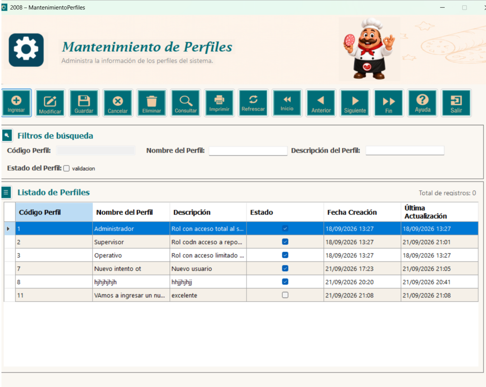
En la parte principal del módulo se encuentran todos los botones y funciones que se pueden realizar.
Para comenzar, presione el botón Ingresar, que limpia todos los textbox y checkbox de la ventana. Luego ingrese el nombre del perfil, la descripción y el estado del perfil.
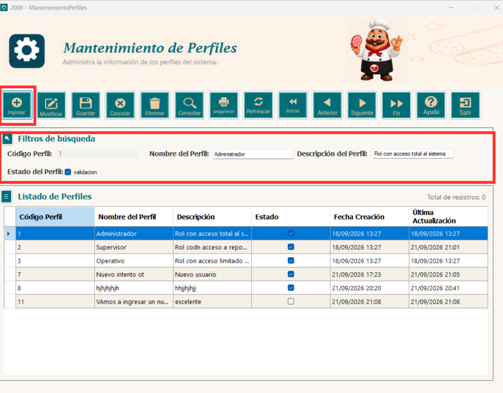
Una vez definamos los datos dentro de cada espacio, presione el botón Guardar para almacenar los datos ingresados. Si el registro es válido, el sistema mostrará un mensaje confirmando que la grabación fue exitosa como se observa en la captura.
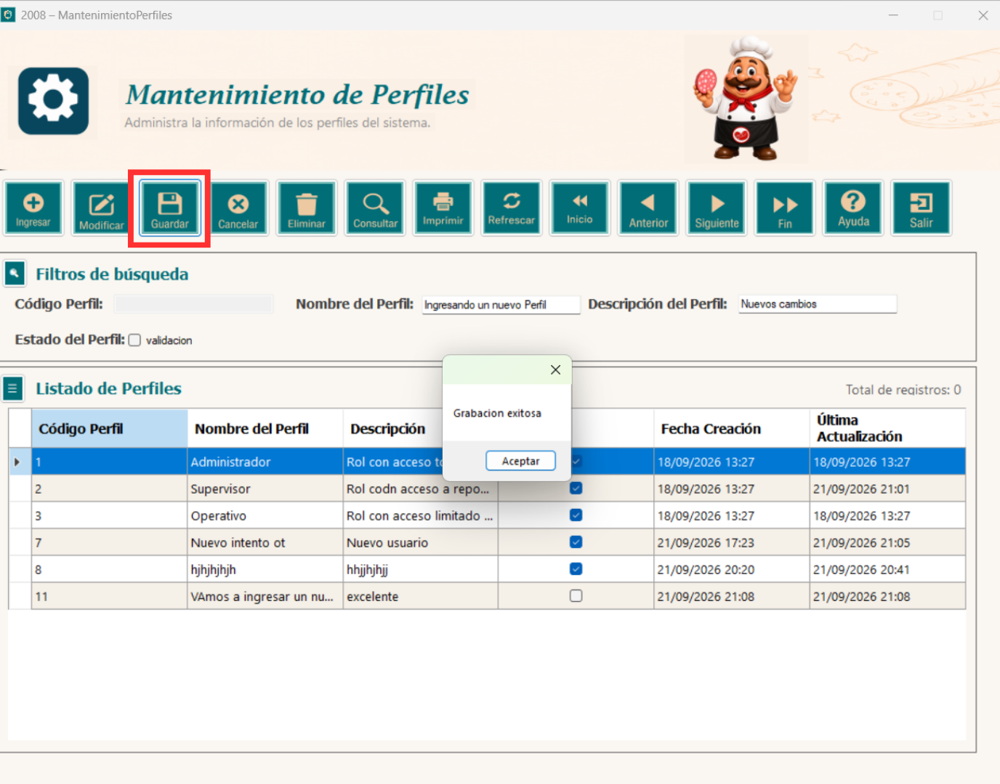
Si dejas el campo Nombre del Perfil vacío, el sistema lo validará y no permitirá el ingreso de datos, mostrando un mensaje de aviso.
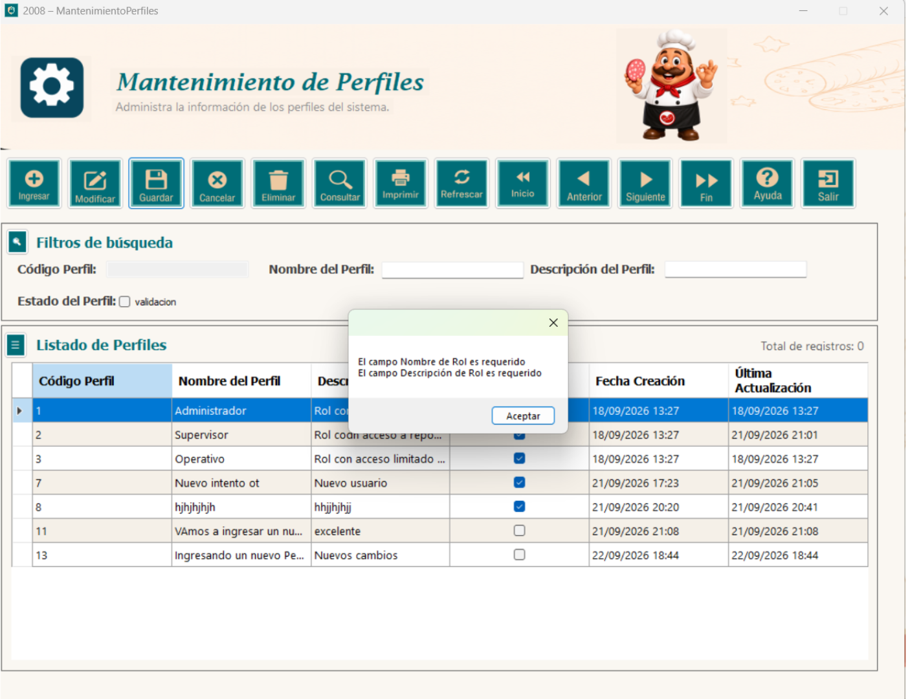
De igual forma, si únicamente falta la descripción, el sistema mostrará un mensaje específico indicando que el campo Descripción de Rol es requerido.
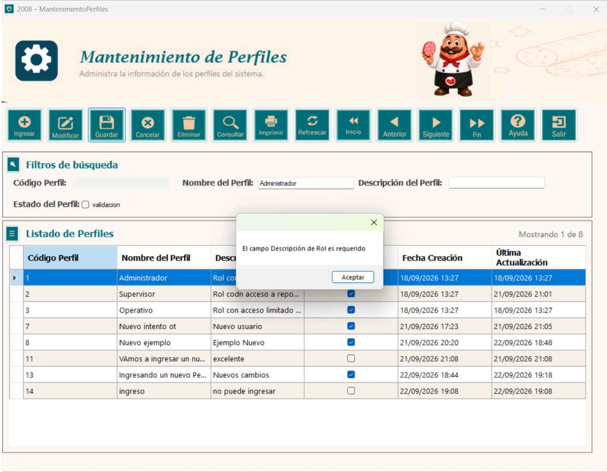
Para modificar un perfil, primero seleccione la fila completa que desea cambiar. Después, actualice los datos del perfil y presione el botón Modificar.
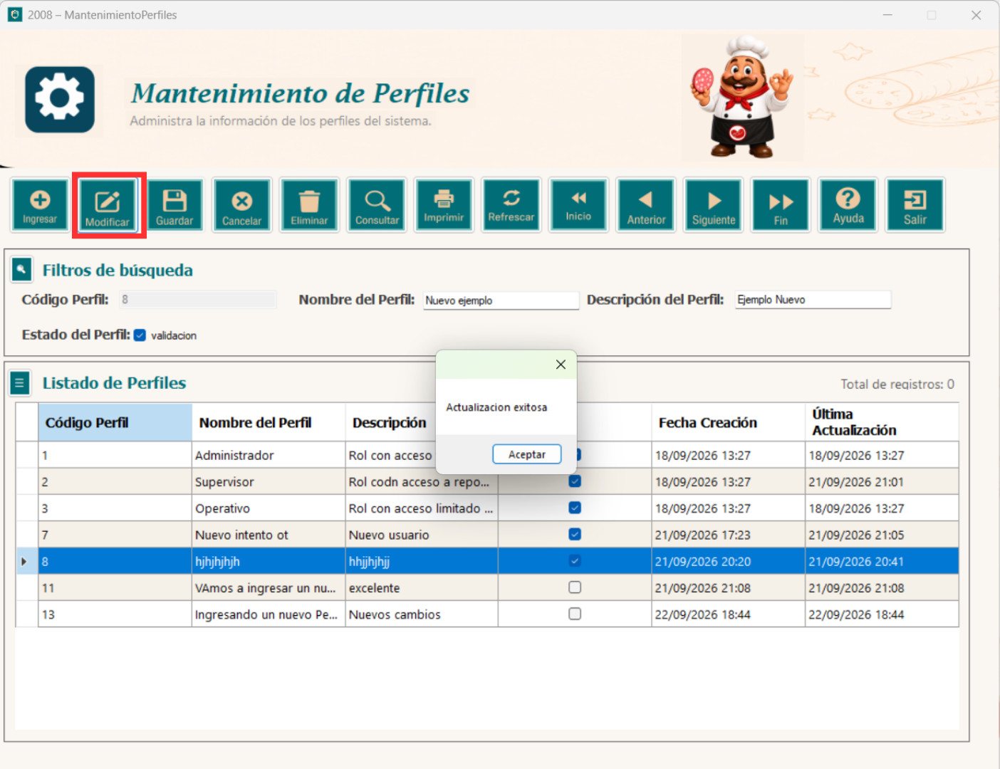
Para eliminar un perfil, selecciónelo en el listado y presione el botón Eliminar. El sistema validará que el perfil no esté en uso antes de eliminarlo; si se encuentra asignado a uno o más usuarios, no permitirá la eliminación y mostrará un mensaje de aviso indicando la cantidad de usuarios que lo tienen asignado.
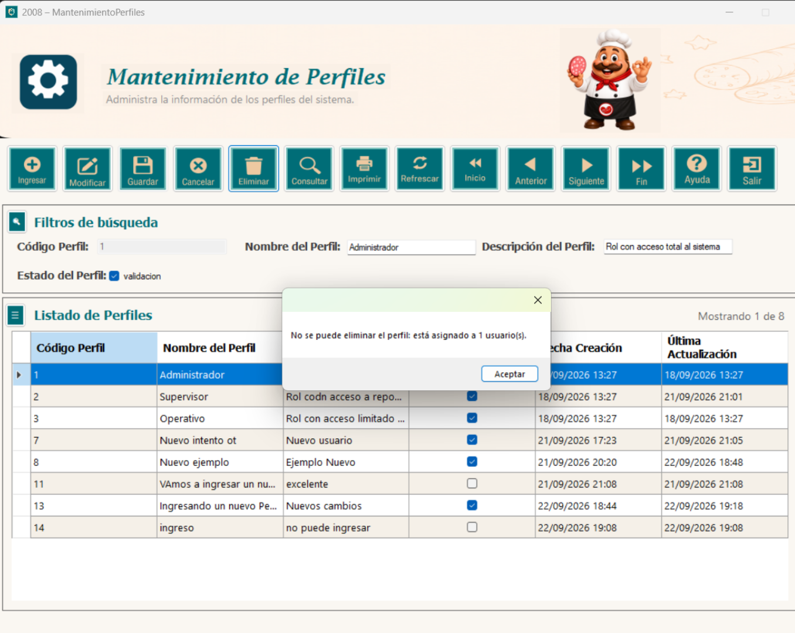
En el formulario se encuentran los botones de navegación, que le permiten desplazarse entre los registros.
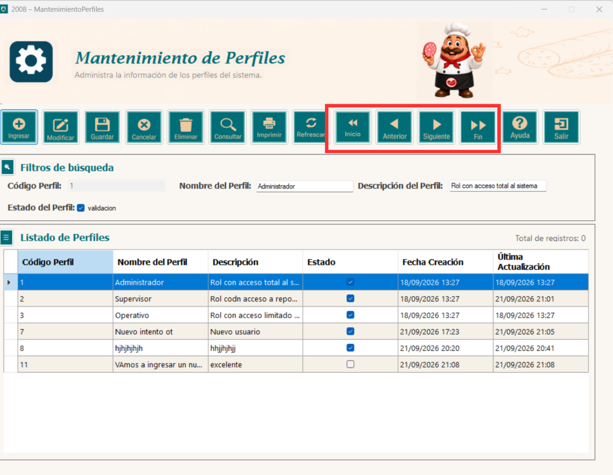
Para utilizar esta función, escriba en el textbox el nombre del rol que desea buscar. No es necesario preocuparse por las mayúsculas o minúsculas, ya que el sistema reconoce el texto de cualquier forma. Luego presione el botón Consultar y se mostrarán en pantalla todos los resultados que coincidan con lo escrito.
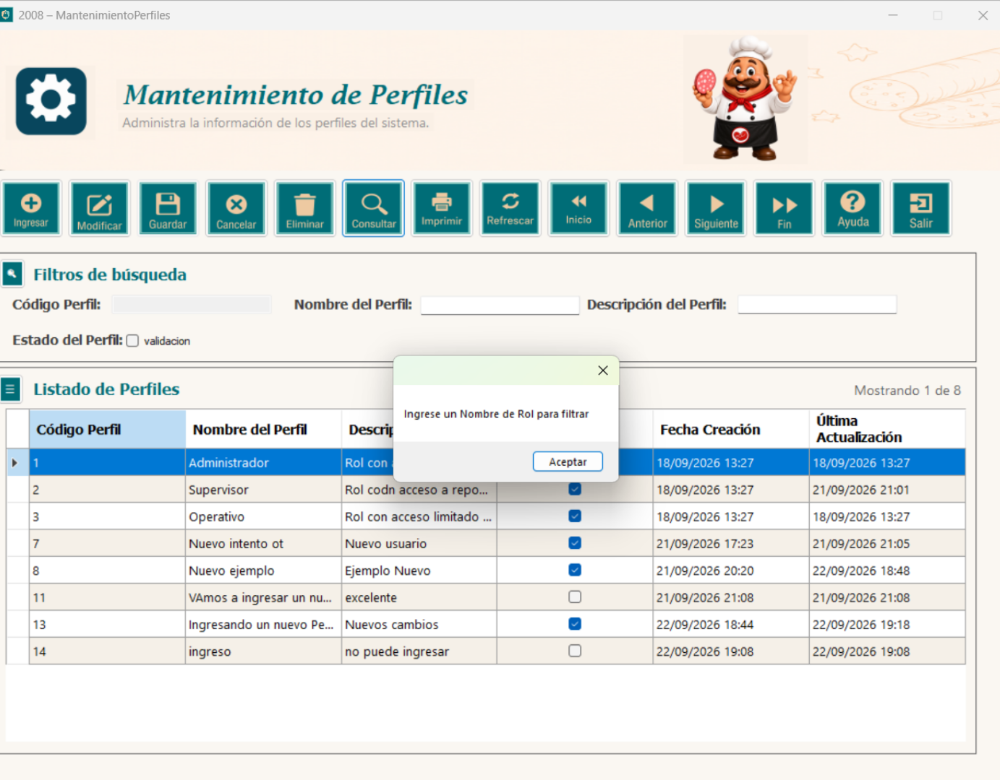
Si el campo de búsqueda se deja vacío y se presiona Consultar, el sistema mostrará un mensaje solicitando que se ingrese un nombre de rol para filtrar.
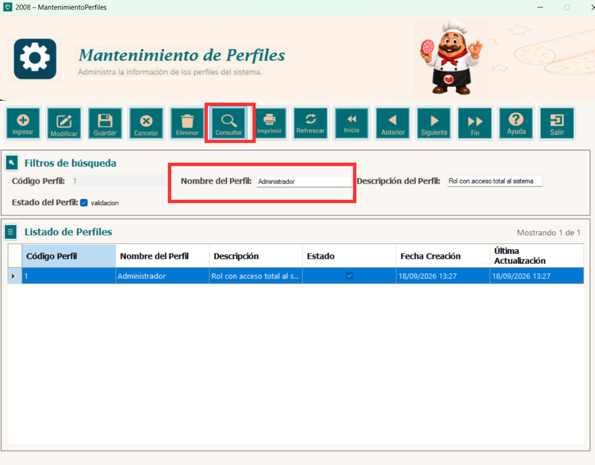
También se incluye un cuadro de control de registros, ubicado en la parte superior derecha del listado, que indica cuántos registros se están mostrando en pantalla en relación con el total disponible.
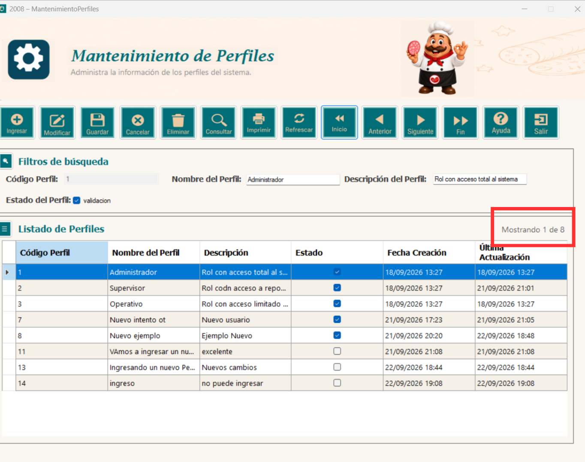
Para obtener un reporte de todos los registros asociados a este módulo, presione el botón Imprimir.
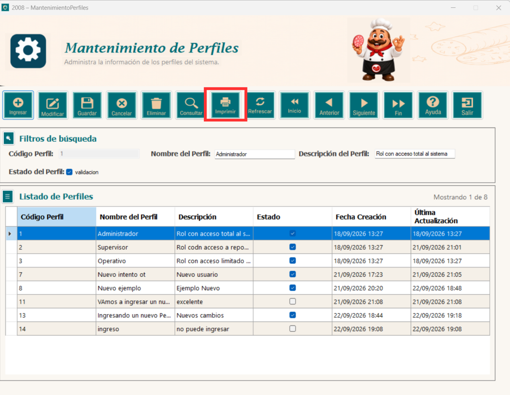
Se abrirá una ventana con el listado de los perfiles donde se muestran todos los datos registrados. Desde la barra superior del reporte puede desplazarse entre páginas, actualizar la información, ajustar el zoom, buscar un texto dentro del reporte, imprimirlo o exportarlo.
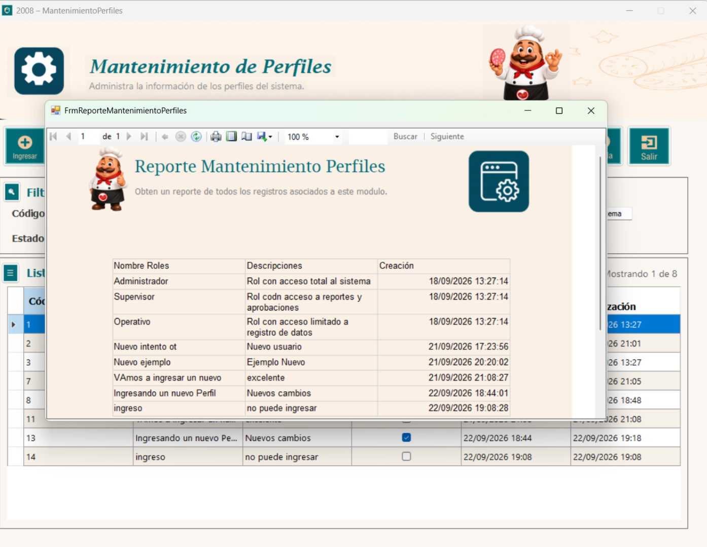